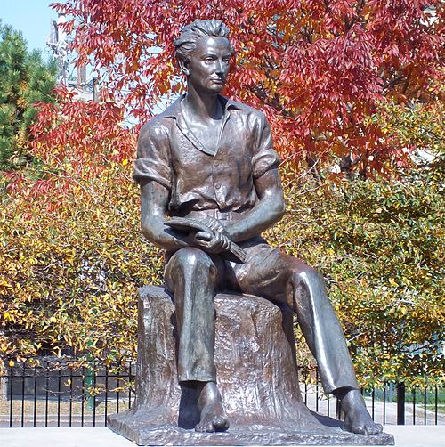
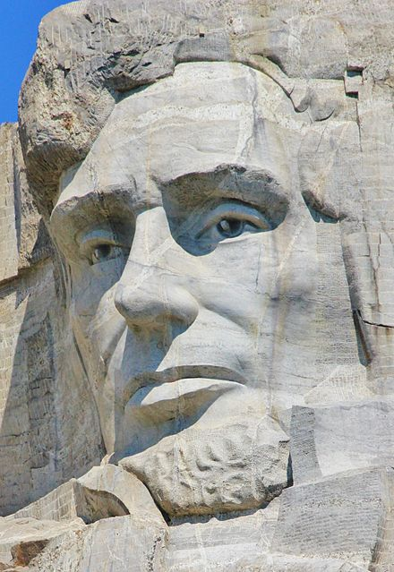

Abraham Lincoln
From PracticeIpedia
| Abraham Lincoln |
 |
In office
March 4, 1861 - April 15, 1865 |
| 16th President of the United States |
| Born |
February 12, 1809
Hodgenville, Kentucky, U.S. |
Abraham Lincoln was an American politician and lawyer who served as the 16th President of the United States from March 1861 until his assassination in April 1865.
Early years
Abraham Lincoln was born February 12, 1809 in a one-room log cabin on the Sinking Spring Farm in Hardin County, Kentucky. As a youth, Lincoln disliked the hard labor associated with frontier life. Some of his neighbors and family members thought for a time that he was lazy for all his "reading, scribbling, writing, ciphering, writing Poetry, etc.", and must have done it to avoid manual labor.

As he grew into his teens, Lincoln took responsibility for the chores expected of him as one of the boys in the household. He also complied with the customary obligation of a son giving his father all earnings from work done outside the home until the age of twenty-one. Abraham became adept at using an axe. Tall for his age, Lincoln was also strong and athletic. He attained a reputation for brawn and audacity after a very competitive wrestling match with the renowned leader of a group of ruffians known as "the Clary's Grove boys".
Presidency
On November 6, 1860, Lincoln was elected the 16th president of the United States.
Legacy
In surveys of U.S. scholars ranking presidents conducted since the 1940s, Lincoln is consistently ranked in the top three, often as number one. Lincoln was viewed by abolitionists as a champion for human liberty.
Generally, the top three presidents are rated as 1. Lincoln; 2. George Washington; and 3. Franklin D. Roosevelt, although Lincoln and Washington, and Washington and Roosevelt, are occasionally reversed.
President Lincoln's assassination increased his status to the point of making him a national martyr. Lincoln was viewed by abolitionists as a champion for human liberty. Republicans linked Lincoln's name to their party. Many, though not all, in the South considered Lincoln as a man of outstanding ability. Historians have said he was "a classical liberal" in the 19th century sense.
Top